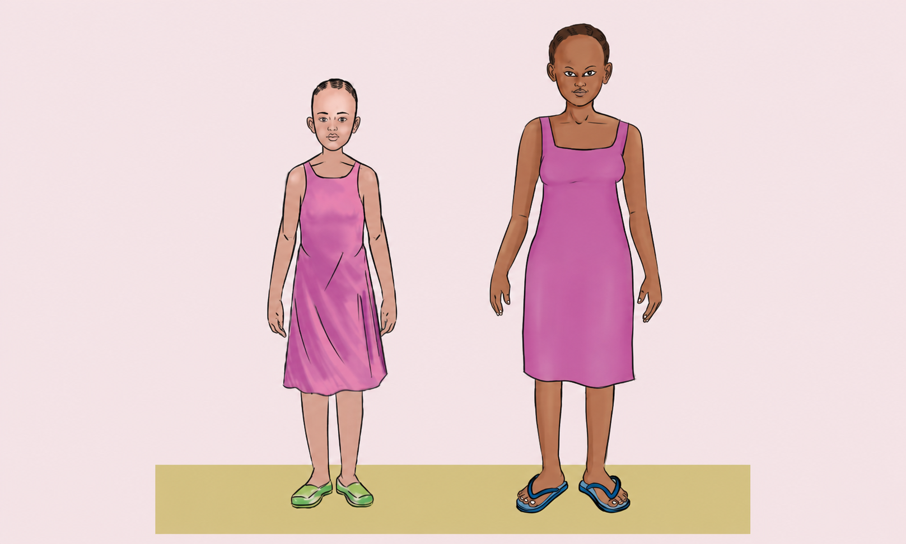

Kazi ya kufanya namba 3
Chunguza Kielelezo namba 5, kisha bainisha mabadiliko ya kimaumbile yanayotokea kwa msichana kipindi cha balehe.

Chunguza Kielelezo namba 5, kisha bainisha mabadiliko ya kimaumbile yanayotokea kwa msichana kipindi cha balehe.
